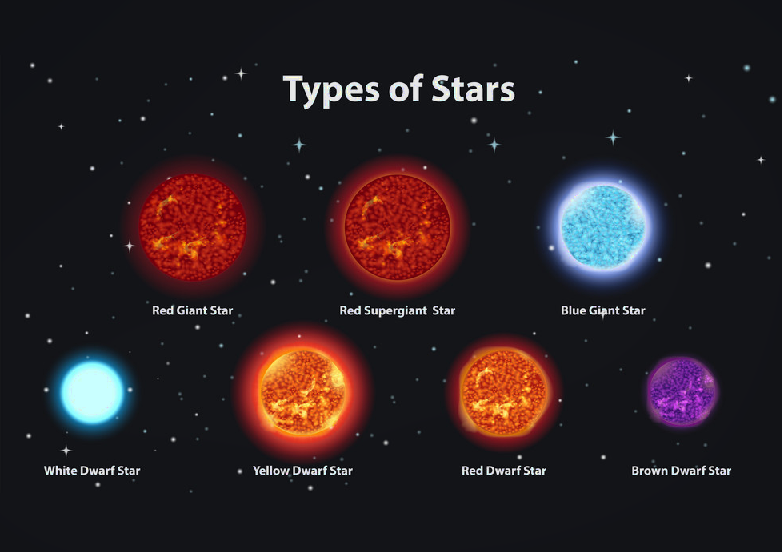

Csillagok
Meghatározás

A nap.
A csillagokat villódzó, sziporkázó fénypontokként látjuk szabad szemmel. A nagy távolság miatt tűnnek pontszerűnek, még a legnagyobb földi távcsövekben is. A csillagok fényének ezt a szabálytalan pislákolását – a szcintilláció jelenségét – a földi légkör áramlásai hozzák létre (gyakran, első ránézésre egyáltalán nem könnyű megállapítani, hogy az égen bolygót látunk-e vagy csillagot; az amatőrcsillagászok egy jó módszere ennek megállapítására az, hogy ha egy csillag nem szcintillál, akkor feltehetően nem is csillag, hanem bolygó).
A legközelebbi csillag a Nap, a következő legközelebbi a Proxima Centauri, amely 4,2 fényévre található, tehát a fény 4,2 év alatt ér ide onnan. Ha az egyik leggyorsabb vonattal, a francia TGV-vel utazhatnánk annak 574,8 km/h nagyságú rekordsebességével, akkor majdnem 8 millió évig tartana az odaút. Ez a távolság tipikus a galaxisunkban. Ennél sűrűbben helyezkednek el a galaxis és a gömbhalmazok középpontjában, és sokkal távolabb a galaktikus halóban, a galaxist körülvevő gömb alakú térrészben.
A csillagok mérete a kicsiny, nagyváros méretű neutroncsillagoktól (melyek tulajdonképpen már halott csillagok) az olyan szuperóriásokig terjed, mint a Sarkcsillag (Polaris), valamint az Orion csillagkép Betelgeuze nevű csillaga, melyek átmérője a Napénak nagyjából ezerszerese. A ma ismert legnagyobb csillag a UY Scuti, amelynek sugara elérheti a Napénak 1420-szorosát. Sűrűsége viszont jóval kisebb, mint a Napé.
A csillagok állapothatározói
A csillagok fizikai tulajdonságait az ún. állapothatározókkal jellemezhetjük. A legfontosabb állapothatározók a következők: fényesség, felületi hőmérséklet, színkép, sugár, forgási periódus, kémiai összetétel, mágneses mező, tömeg. Ezen kívül szokás még a felületi gravitációs gyorsulást is az állapothatározók közé sorolni, ezek azonban a csillag tömege és sugara ismeretében könnyen kiszámíthatóak.
Fényesség
A legfényesebb csillag a földröl a Sirius A.
A csillagok látszólagos fényességének mértékegysége a magnitúdó. Minél fényesebb egy adott csillag, annál kisebb a magnitúdó értéke. A magnitúdó logaritmikus mértékegység: ha két csillag látszólagos fényessége között 1 magnitúdó különbség van, akkor az egyik csillag 2,512-szer fényesebb a másiknál.
A Nap látszólagos fényessége -26,86 magnitúdó. A Hold teliholdkor -12,6, a Vénusz -4,6, a Jupiter -2,94 magnitúdós fényességet érhet el. Az éjszakai égbolt legfényesebb csillaga, a Szíriusz -1,45 magnitúdós. A leghalványabb, szabad szemmel tiszta időben még látható csillagok 6 magnitúdósak. Távcsővel halványabb objektumok is láthatók: minél nagyobb a műszer objektívjének átmérője, annál halványabb égitesteket láthatunk vele. A legnagyobb földi távcsövekkel 25 magnitúdós, a Hubble űrtávcsővel 30 magnitúdós csillagok is észlelhetők.
A látszólagos fényesség nem utal a csillagok valódi fényességére. Egyes halvány csillagok látszó fényessége azért kicsi, mert nagyon távol vannak a Földtől. Ezért a csillagok valódi fényességét az abszolút fényesség adja meg, amely a csillag 10 parszek távolságból megfigyelhető látszólagos fényessége.
Luminozitás
A csillagok luminozitásán a másodpercenként kibocsátott sugárzás mennyiségét értjük. A csillagok energiáját a magban végbemenő termonukleáris reakciók hozzák létre. A luminozitás a csillag korától is függ. Az energia elektromágneses sugárzás formájában szabadul fel, a röntgen sugaraktól a rádióhullámokig. Az ultraibolya sugárzást a földi légkör felfogja, amely nehezíti a luminozitás mérését a felszínről. Ezért ezeket közvetlenül a világűrből mérik, műholdak segítségével. Egyes csillagok luminozitása a Nap luminozitásának 500 – 500 000-szerese is lehet.
Hőmérséklet
A hőmérséklet a csillag magjától a légköréig változik. Például a Nap magjában eléri a 15 millió °C-ot, míg a légkör effektív felszíni hőmérséklete csak 5785 K. A csillagászok a légkör effektív hőmérsékletét a színkép és a fekete test (minden sugárzást elnyelő test, amely csak elméletileg létezik) összehasonlításával mérik.
Méret
A csillagok mérete egyik meghatározó tényezője a tömegük. Minél több anyagból állnak, annál nagyobbak lesznek. Azonban ez csak részben igaz, mert a csillagok méretét a belső nyomás is meghatározza, amelyet a gravitációs vonzás és a termonukleáris reakciók egyensúlya alakít ki. A legkisebb csillagok, amelyeket barna törpének nevezünk, többnyire csak néhány százaléka a Nap tömegének, míg a legnagyobbak több mint 100-szor nagyobbak lehetnek.
Az átlagos csillagok átmérője körülbelül 1 millió km, ami nagyjából százszor nagyobb, mint a Föld átmérője. Azonban vannak olyan csillagok, amelyek több mint egymilliószor nagyobbak a Naptól, mint például a VY Canis Majoris, amelynek átmérője több mint 1,8 milliárd km.
A csillagok mérete mellett fontos szerepet játszik az életkoruk is. Az idősebb csillagok, amelyek már sok energiát bocsátottak ki, összehúzódnak és kisebbek lesznek. Ezeket a csillagokat fehér törpéknek nevezik. Másik végletként az ifjabb csillagok, amelyek még mindig nukleáris reakciókkal állítják elő az energiát, gyakran nagyobbak és forróbbak, mint a középkorú csillagok.
A csillagok méretének megértése és a különböző típusok megkülönböztetése lehetővé teszi a csillagászok számára, hogy jobban megértsék a csillagok életciklusát és az egész univerzumot. A csillagászok a csillagok méretének és más tulajdonságainak megfigyelésével és modellezésével folyamatosan javítják tudásukat és elméleteiket a világegyetem működéséről.
Tömeg
A tömeg az egyik legfontosabb állapothatározó. Értéke 0,07 és 100[4] naptömeg között változhat. Alsó határát a stabil hidrogénfúzió elindításához szükséges maghőmérséklet jelöli ki, az ennél könnyebb égitestek a barna törpék, melyek magjában csak a deutérium fúziója indul be, ami hamar el is fogy. Felső határa az úgynevezett Eddington-határ, az ennél nehezebb csillagok olyan intenzív sugárzást bocsátanának ki, hogy a sugárnyomás lefújná a csillag külső rétegeit (így megkönnyítve).
Egy csillag gravitációs ereje a tömegétől függ. A kettőscsillagok esetében a tömeget az egymástól való távolságuk és keringési idejük alapján lehet meghatározni. A pálya a tömegvonzástól függ, a tömegvonzás pedig a tömegtől és a távolságtól. A tömeg-luminozitás összefüggés alapján is meghatározhatjuk egy csillag tömegét. A tömeg és a luminozitás egyenes arányban nő.
Minél nagyobb egy csillag tömege, annál gyorsabb ütemben alakítja át az anyagot energiává. Ennek következtében a nagy tömegű csillagok élettartama rövidebb, mint a kisebb tömegűeké. A csillagok – a fősorozaton való tartózkodásuk során - a hélium és hidrogén magjukban végbemenő fúzióból nyerik az energiát. Ez a folyamat a csillag tömegétől függően rövidebb vagy hosszabb. Egy naptömegű csillag élettartama 10 milliárd év, egy három naptömegű csillagé 500 millió év, egy 30 naptömegű csillagé már csak 6 millió év.
Kémiai összetétel
Habár a csillagok nagyrészt hidrogént és héliumot tartalmaznak, kémiai összetételük eléggé különbözik. Például nemrég határozták meg, hogy a fiatal csillagok kisebb arányban tartalmaznak fémeket, mint az idősebbek.[forrás?] Ennek az a magyarázata, hogy a vörös óriások már elégették a bennük lévő hidrogént, bennük a hélium és a nehezebb elemek fúziója zajlik.
Osztályozás

|
Csillagfejlődés
A csillagok születése
Csillag születik.
A csillagok születése több millió éves folyamat, és több szakaszból áll: egy molekuláris felhő belsejében csomósodások vagy globulák jönnek létre, ezekből előbb protocsillagok, majd csillagok lesznek.
A világűrben hatalmas por- és gázfelhők vannak. A molekuláris felhőkben az anyag sűrűbb és koncentráltabb. Ezek több tíz fényév átmérőjűek lehetnek, a bennük lévő anyag még nagyon hideg.
Azért nevezzük molekuláris felhőknek, mert a benne található gázok molekulák formájában vannak jelen. Minden ilyen molekuláris felhő gyenge egyensúlyban van. Külső hatás következtében ez az egyensúly felborul. Ekkor a felhő egy része saját tömegétől összeroskad és az anyag elkezd összehúzódni. A felhő kisebb anyagcsomókra oszlik.
A molekuláris felhőkből kiváló anyagcsomókból globulák jönnek létre. Ezeknek mérete a Naprendszerével egyenlő, tömegük 200 naptömeg. Még nagyon hideg és sötét objektumok. Lassan egyre sűrűbbek és forróbbak lesznek, majd létrejönnek belőlük a protocsillagok. Ezek már sugározni kezdenek. A protocsillagok anyaga tovább sűrűsödik, fényük változó. Gyors gázkilövellések indulnak a pólusok felé. Amikor a magban a hőmérséklet eléri a 10 millió fokot beindulnak a nukleáris reakciók. A protocsillag átalakulásának ideje a tömegétől függ (30 millió év egy Naphoz hasonló csillagnál és 300 ezer év egy 30 naptömegű csillagnál).
A csillagok halála
Pulzár a Rák-ködben (Chandra-űrtávcső)
Amikor a csillag elhasználta a belsejében lévő hidrogént, elkezd összehúzódni és egyre forróbb lesz. A hidrogén még nagy mennyiségben fordul elő a felszín közelében és itt is beindul a fúzió. Ezután a csillag kitágul és színe vörössé válik, vörös óriás lesz. Átmérője 10-100 napátmérő is lehet. A magban újabb nukleáris reakciók indulnak be: a hélium fúziójából szén keletkezik. A csillag atmoszférája kidobódik az űrbe, táguló gázgömböt, planetáris ködöt hozva létre. Amikor a hélium elfogy, a csillag újra összehúzódik.
Ha a csillag tömege nem elég nagy, belsejében már nem lesz akkora hőmérséklet, hogy újabb reakciók induljanak be és fehér törpévé válik. A fehér törpe egy nagyjából földméretű, naptömegű csillag. Stabilitását már nem a magfúzió, hanem a belsejében kialakult elfajult elektrongáz nyomása biztosítja, egyensúlyt teremtve a gravitáció összehúzó erejével. A fehér törpék hőmérséklete és fényessége évmilliárdok alatt fokozatosan csökken, és csak egy fekete törpe marad hátra.
Nagy tömegű csillagoknál a hélium elhasználása után a fúzió egyre nagyobb atomtömegű elemekkel folytatódik, egészen a vasig. A fúzió azért áll le a vasnál, mert az ennél nagyobb rendszámú elemek keletkezése már nem energianyereséges. Szuperóriás csillagok jönnek létre, melyeknek átmérője 1000 napátmérő is lehet. Belsejük különböző kémiai összetételű rétegekből áll, amelyek a felszínhez közeledve egyre hidegebbek és ritkábbak. Hirtelen felrobbannak és az anyaguk szétszóródik az űrben. Ezeket nevezzük szupernóváknak. A szupernóvák fényessége rövid ideig a Napnál 10 milliárdszor nagyobb. A robbanás után visszamaradó mag, a tömegétől függően neutroncsillag vagy fekete lyuk lesz.